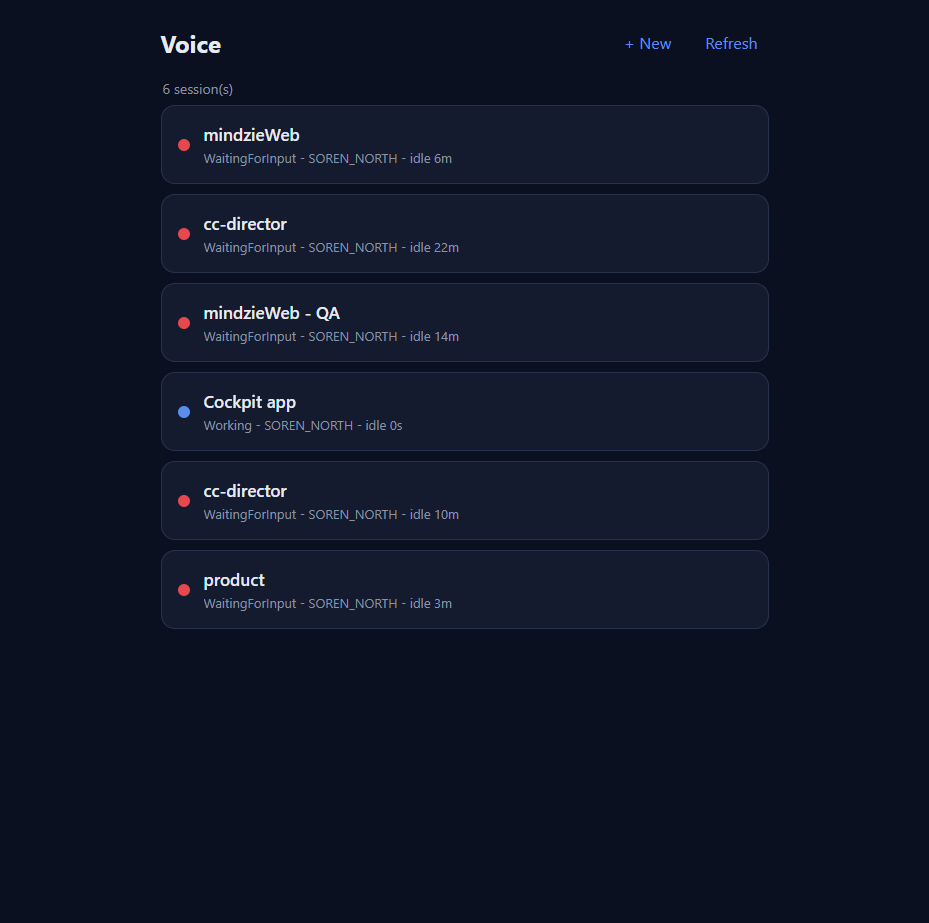
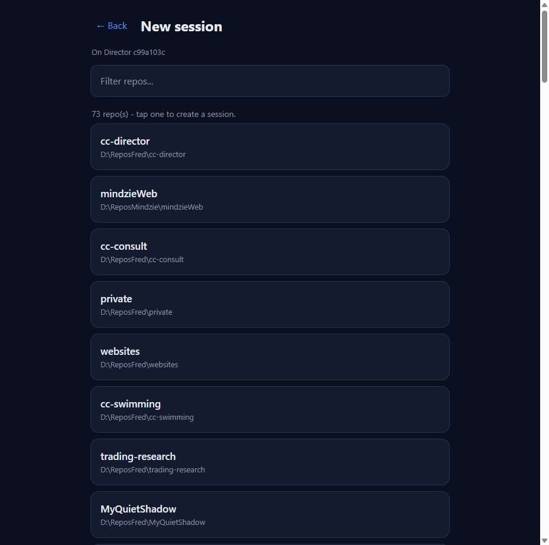
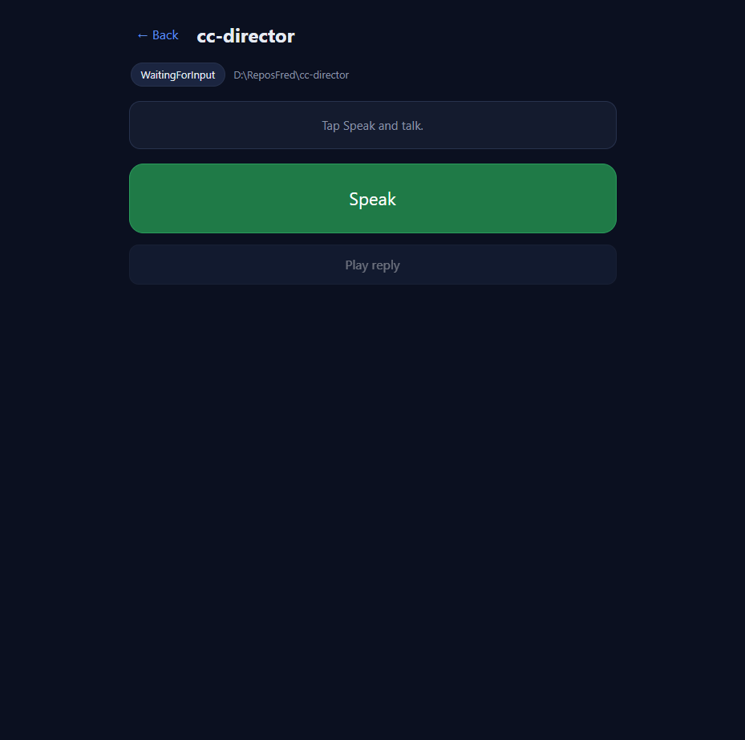
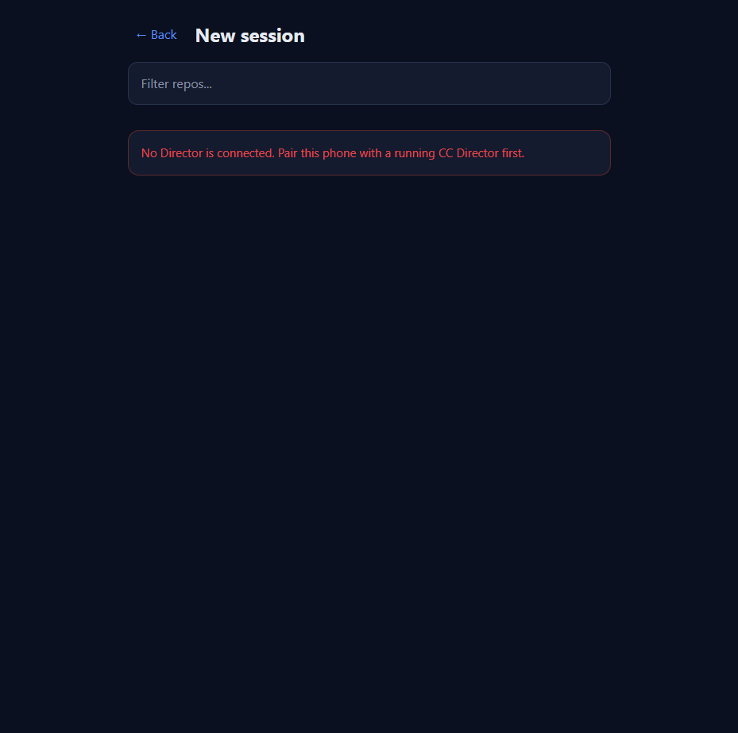
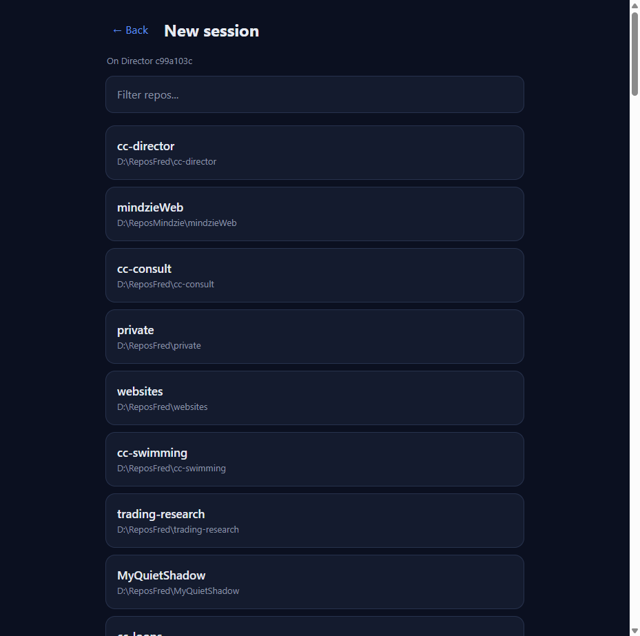

Title: [cockpit] Voice list: New session button (pick repo, create, open)
PR: #431 (feat/421-voice-newsession, stacked on feat/420-voice-nav)
QA method: The PR-branch wwwroot/pages/voice/* files were served unchanged and
exercised against the live running Gateway (port 7878) so every API call hit real endpoints and real data.
The currently DEPLOYED Gateway page does not yet contain the button, confirming this proof is of the PR code,
not a stale deployment. A real session was created and then DELETED to leave no junk in the fleet.
| # | Criterion | Expected | Actual | Result |
|---|---|---|---|---|
| 1 | Clearly visible "New session" button on /voice list | Button visible in list header | "+ New" button visible next to Refresh; offsetParent!=null | PASS |
| 2 | Tapping it shows a repo chooser from the repos endpoint | Repo list populated from GET repos | New-session view opened; 73 real repos loaded from GET /directors/{id}/repos, each name+path | PASS |
| 3 | Choosing a repo POSTs and opens the new session | POST /directors/{id}/sessions, success opens voice view | POST .../sessions returned 201 with sessionId 6c307cac...; UI switched to session view (cc-director) | PASS |
| 4 | Errors (no repos / create failed) show a clear message | Visible error, no silent failure | No-Director: "No Director is connected. Pair this phone...". Create-fail: "Could not create session (500)." and user stays on the view | PASS |
| 5 | Proof: button -> repo list -> created open + 201 in network log | Screenshots + create response | All captured below; 201 response body captured in-page | PASS |
Note on endpoint naming: the criteria text says GET /repos; the implementation uses
GET /directors/{id}/repos and POST /directors/{id}/sessions. The issue's own
Assumptions section explicitly authorizes reusing those existing Gateway endpoints, so this is per-spec, not a defect.
wwwroot/pages/voice/ + proof. No .cs, no server change.docs/cencon/ doc update required. No DT security rule touched.


POST /directors/c99a103c-.../sessions -> HTTP 201
{ "sessionId":"6c307cac-ac13-4b72-a6ff-ef2ef71933b2",
"repoPath":"D:\\ReposFred\\cc-director", "status":"Running", ... }
(test session DELETEd afterward; fleet left at its original 6 sessions)
DOM probe confirmed visible banner "Could not create session (500)." with the user kept on the new-session view (screenshot shows the chooser scrolled to top; banner renders below the list).

QA Agent - CenCon Development Method - independent verification against live Gateway 7878.